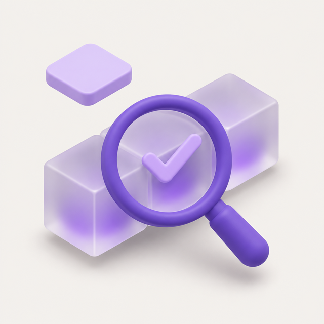

기록 지문을 맞춰 보는 중이에요
링크를 받은 사람만 볼 수 있어요. 이름과 계좌는 가려져요.
A님 · 11월 14일 (토) 근무
₩87,720 보관돼 있어요
₩5,160은 이의가 정리될 때까지 따로 남겨 둬요.
- 가게
- 새싹편의점 연희점
- 받을 곳
- 국민은행 ***-21-3021
원본 기록과 고친 기록
| 항목 | 원본 기록 | 고친 기록 |
|---|---|---|
| 출근 | 오후 10:00 | 오후 10:00 |
| 퇴근 | 오전 8:00 | 오전 7:30 (고침) |
| 일한 시간쉬는 1시간 빼고 | 9시간 | 8.5시간 (고침) |
| 일당 | ₩92,880 | ₩87,720 (고침) |
| 남긴 사람 | A님 | 박정민 사장님 |
30분 줄었어요 · 시급 ₩10,320 × 0.5시간−₩5,160
원본은 가게 30m 안에서 A님이 직접 눌렀어요.
"다음 근무자와 교대했어요"
박정민 사장님 · 11월 15일 오전 9:40원본 기록은 지워지지 않고, 고친 기록이 그 뒤에 덧붙어요.
서명 2개
- A님원본 기록 · 11월 15일 오전 8:00서명함
- 박정민 사장님고친 기록 · 11월 15일 오전 9:40서명함
A님이 고친 퇴근 시간에 이의를 보냈어요
"다음 근무자가 늦게 와서 8시까지 있었어요"
A님이 남긴 말박정민 사장님의 답을 기다리고 있어요
A님 기록으로 바뀌면
₩5,160도 A님 몫으로 보관돼요
사장님 기록을 유지하면
₩5,160은 사장님이 채워 둔 돈으로 돌아가요
기록 지문
맞춰 보는 중지문은 기록 글자로 계산한 SHA-256 해시예요. 글자 하나만 바뀌어도 지문이 완전히 달라져요.
원본 기록맞춰 보는 중
- 남겨 둔 지문
- 이 브라우저에서 계산한 지문
계산하는 중이에요
고친 기록맞춰 보는 중
- 남겨 둔 지문
- 이 브라우저에서 계산한 지문
계산하는 중이에요
고친 기록 안의 원본 지문맞춰 보는 중
원본 기록 JSON 보기
고친 기록 JSON 보기
키 이름 순서로 줄 세우고 빈칸 없이 이은 글자를 UTF-8로 계산해요.
가진 파일과 맞춰 보기
체무에서 받은 기록 파일(.json)을 고르면 지문을 바로 맞춰 봐요.
고른 파일은 이 브라우저 안에서만 계산하고 어디에도 보내지 않아요.
블록체인 기록
테스트넷 예시- 기록 번호
- 0x4be1…92af
- 블록
- 18,204,117
시연용 모의 값이에요. 실제 체인에 남긴 값이 아니에요.
공유 링크
- 만든 날부터 7일 동안 열려요7일은 예시예요
- 링크 끄기는 링크를 만든 사람만 할 수 있어요받은 사람은 링크를 끌 수 없어요
사장님과 알바생이 같은 기록을 봐요. 분쟁이 생기면 이 페이지를 그대로 보여 주세요.
링크를 열 수 있는 기간이 지났어요
기록과 보관된 돈은 그대로 있어요.
링크는 만든 날부터 7일(예시) 동안 열려요. 링크를 보낸 사람에게 새 링크를 받으면 다시 볼 수 있어요.
체무 기록 대조 링크 기간이 지났어요. 새 링크를 보내 주세요.
복사해서 링크를 보낸 사람에게 보내면 돼요